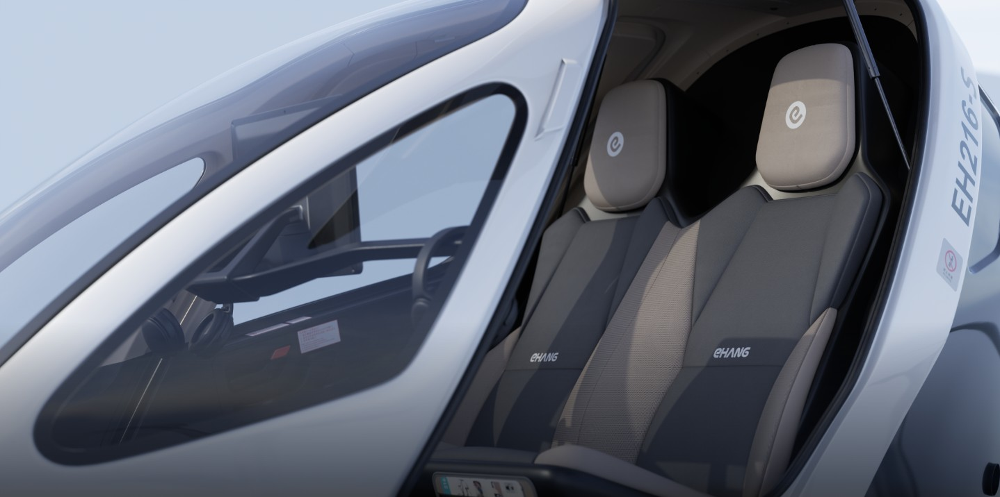
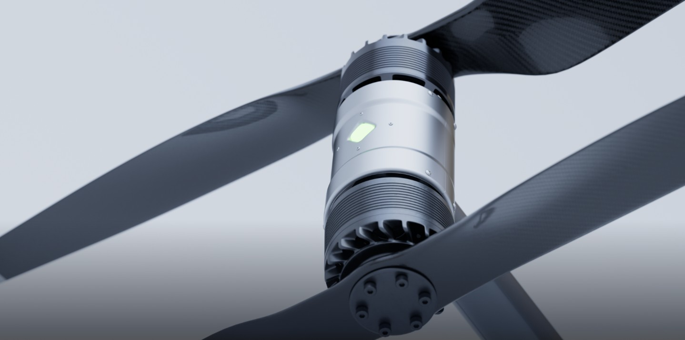
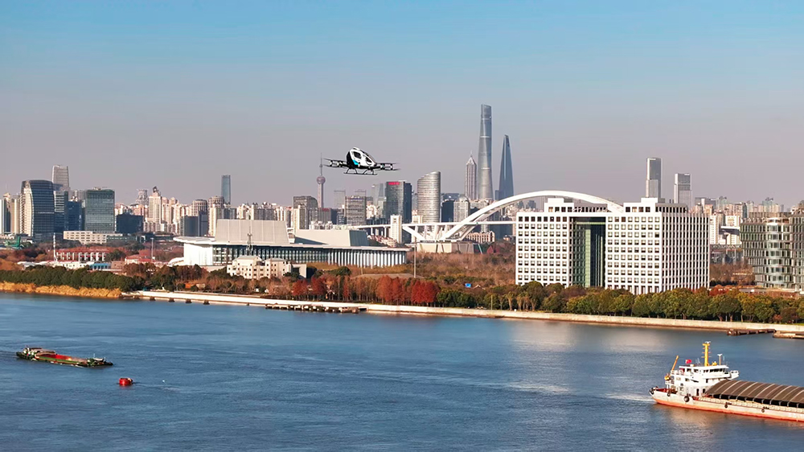

亿航 EH216‑S：技术、场景与市场可行性

目录
- 1 执行摘要
- 2 项目背景与发展路径
- 3 产品定义与基础参数
- 4 系统架构与关键技术
- 5 技术可行性分析
- 6 安全、SOTIF与适航认证
- 7 应用场景分析
- 8 市场可行性分析
- 9 竞品横向对比
- 10 现存工程与商业化挑战
- 11 总结与展望
- 参考文献
1 执行摘要
亿航EH216‑S是一款双座载人级全自主自动驾驶垂直起降飞行器（eVTOL），是全球较早获得型号合格证的载人eVTOL产品。它不需要人类飞行员操作，依靠多旋翼分布式电推进，实现垂直起降与全自动航线飞行。
- EH216‑S已取得中国民航局TC型号合格证，完成适航审定，具备合法载人运行的监管基础，区别于仅完成演示的原型样机。
- 采用多旋翼分布式推进，16个电机螺旋桨，纯电动，设计用于低空短途载人，但是续航、载荷、恶劣气象条件仍然存在明确边界。
- 技术可行性分层：自动驾驶垂直起降已经被适航验证；大规模高频城市通勤尚未充分验证；大众普及化交通运行仍处于试点阶段。
- 市场定位优先文旅观光、景区短途体验，城市空中出租属于中长期目标，现阶段以示范运营为主，而非大规模商业化。
- 核心约束来自续航里程、电池能量密度、起降点基础设施、空域管理、运营成本与公众接受度。
2 项目背景与发展路径
亿航智能是国内低空eVTOL代表企业，EH216系列从原型机迭代到EH216‑S量产版本。
- 早期原型阶段：完成多轮试飞，验证全自动垂直起降、自主航线；
- 适航攻坚阶段：向民航局提交载人eVTOL适航申请，开展大量可靠性、故障、环境试验；
- 2023年：EH216‑S获得中国民航局型号合格证TC，是全球少数拿到载人eVTOL适航证的机型；
- 后续开展多地示范运营：景区、文旅试点，开展载人体验飞行；
- 当前状态：可在获批空域、合规起降点开展商业示范，尚未大规模进入城市通勤网络。
关键提示：拿到型号合格证不等于可以随时随地随便飞，运行仍然需要空域审批、起降场地、运营人资质三重条件。
EH216-S 试飞演示视频
视频说明：EH216‑S全自动起降与载人示范飞行
3 产品定义与基础参数
EH216‑S为双座全自主自动驾驶多旋翼eVTOL，无机载飞行员，乘客仅做乘坐，不操纵飞行器。
| 项目 | EH216‑S关键信息 |
|---|---|
| 座位 | 2座（乘客，无飞行员） |
| 构型 | 16轴多旋翼分布式电推进 |
| 动力 | 锂电池纯电动 |
| 最大起飞重量 | 约620kg |
| 设计航程 | 约30km级别 |
| 最大飞行高度 | 适航限定运行低空 |
| 操控模式 | 全自动自动驾驶，地面监控后台，无机载操纵杆 |
| 适航状态 | 中国民航TC型号合格证 |

4 系统架构与关键技术
4.1 分布式多旋翼推进系统
16组电机‑螺旋桨分散布置，带来硬件冗余；个别电机失效条件下系统仍可以维持安全降落。多旋翼优势是结构简单、垂直起降不需要跑道；劣势是巡航能耗相对复合翼更高，限制续航距离。
4.2 全栈自动驾驶飞控系统
EH216‑S不设置机载飞行员。飞行器依靠组合导航（GNSS+IMU+感知传感器）完成航线规划、避障、起降。地面监控中心对多架飞行器进行状态监视，紧急情况下可下发指令接管。
技术难点：城市环境GNSS信号遮挡、建筑物干扰、阵风扰动下姿态稳定、故障条件下自动迫降逻辑。
4.3 电池与能源系统
采用机载锂电池包，飞行结束需要更换或充电。现阶段锂电池能量密度是硬约束，直接限制航程。电池循环寿命、热安全、快速换电是商业化运营的关键。
4.4 地面运营调度平台
不是单机问题，需要一套地面系统：任务编排、飞行器状态监控、空域申报、起降场管理、告警与应急处置。单机飞控和地面调度两者共同构成运行体系。

5 技术可行性分析
5.1 已经验证部分
- 垂直起降、全自动航线飞行，经过民航适航试验验证；
- 多电机冗余故障降级能力，部分动力单元失效下安全迫降；
- 整机完成环境试验：高低温、湿度、振动等适航测试；
- 真实载人示范飞行已经大量开展。
5.2 仍然存在的技术短板
- 续航较短，适合短途，无法支持长距离交通；
- 大风、强降雨、大雾等复杂气象运行边界受限；
- 城市高楼峡谷环境GNSS容易受遮挡，导航可靠性风险；
- 电池寿命、换电效率影响高频连续运营；
- 噪声问题，多旋翼运行噪声会影响城市社区接受度。
| 能力层级 | 判定（EH216‑S） |
|---|---|
| L1：受控垂直起降、短途演示飞行 | ✅已适航验证 |
| L2：扰动环境下稳定自主飞行、故障迫降 | ✅试验室+试飞验证，恶劣气象仍有限制 |
| L3：可重复高频常态化运营 | ⚠️试点验证，大规模高频待检验 |
| L4：城市大规模公共通勤运输 | ❌尚未证明，受空域、成本、基础设施约束 |
6 安全、SOTIF与适航认证
EH216‑S是国内首个拿到载人eVTOL型号合格证机型。适航TC代表：设计满足民航安全审定要求，但不等于随便哪里都可以飞。运行还需要：运营资质、空域批复、合规起降点。
主要风险点
- 功能安全：电机、电调、电池、飞控硬件失效，依靠冗余设计降级迫降；
- SOTIF预期功能安全：GNSS信号丢失、高楼遮挡、阵风、大雾，系统感知‑规划能力不足带来风险；
- 第三方地面风险：低空运行，飞行器故障坠落对地面人员财产的风险；
- 运行安全：起降点管理、人员安检、地面调度流程。
适航是“设计层面合格”，实际安全还要靠运营流程、空域规则、维护体系共同保证。
7 应用场景分析
| 场景 | 技术适配 | 监管难度 | 综合判断 |
|---|---|---|---|
| 景区文旅观光、定点体验飞行 | 高 | 中等（封闭/限定空域） | ✅现阶段最现实商业模式 |
| 城市短途空中出租（试点） | 中 | 很高（城市空域、起降点） | ⚠️只适合小范围示范，暂不适合大规模普及 |
| 应急救援、医疗转运 | 低 | 极高 | ❌载荷、续航、气象能力受限，很难替代直升机 |
| 物流货运 | 低 | 高 | ❌本机型定位载人，货运不是设计目标 |
文旅观光是EH216‑S落地最多的场景：固定景区、划定空域、固定起降点，航程需求小，对复杂天气做严格限制。城市空中出租属于未来愿景，需要低空政策、大量 vertiport起降点建设。

8 市场可行性分析
需求侧
短期市场主要来自文旅项目、旅游运营商，客户愿意为新奇低空体验支付高单价。面向普通市民通勤的大众市场，受航程、票价、噪声、心理安全感制约。
成本与商业模式约束
- 飞行器采购成本高；
- 电池更换、维护、地面调度系统、起降场地会持续产生运营成本；
- 如果单次飞行票价过高，无法和地面网约车竞争；票价压低则运营商很难盈利。
市场分层判断：
- 短期：文旅示范、体验业务，限量运营，商业闭环可以在部分景区实现；
- 中期：城市小范围试点运营，要看政策开放和起降基础设施建设进度；
- 长期大规模城市通勤：存在巨大不确定性，不能简单引用“万亿低空经济”直接推导单机销量。
9 竞品横向对比
| 产品 | 类别 | 核心特点 | 主要约束 |
|---|---|---|---|
| 亿航EH216‑S | 多旋翼载人eVTOL | 全自主无飞行员，已拿中国TC适航证，优先文旅 | 续航短，城市大规模通勤待验证 |
| Joby S4 | 复合翼eVTOL | 长航程设计，面向美国城市空中出租，FAA适航推进中 | 适航周期漫长，成本高 |
| Tesla Roadster Rocket | 改装高性能汽车+冷气推力演示原型 | 短时跳跃抬升，品牌演示，无航空器适航 | 不能持续飞行，双重监管空白 |
10 现存工程与商业化挑战
- 电池能量密度瓶颈，直接限制航程；
- 城市复杂环境导航、抗恶劣气象；
- 城市起降点（vertiport）基础设施建设成本高；
- 低空空域管理、飞行审批流程需要持续完善；
- 噪声、公众心理接受度；
- 运营维护成本控制，实现运营商盈利。
11 总结与展望
亿航EH216‑S是全球载人eVTOL领域重要工程实践，完成从原型演示走向适航审定，证明全自动载人多旋翼eVTOL在限定条件下安全可行。但是适航不等于立刻实现城市空中交通普及。
它更适合景区、封闭空域的文旅体验；面向城市通勤的大规模商业化，仍需要解决续航、基础设施、空域规则、运营成本一系列系统层面问题，而不仅仅是飞行器单机技术。评价eVTOL不能只看样机视频，需要区分“演示可行、适航验证、试点运营、大规模商业化”不同成熟层级。
参考文献
- 中国民用航空局. 亿航EH216‑S型号合格证相关公开资料
- 亿航智能官方公开白皮书、产品资料、示范运营新闻
- 飞行汽车发展报告2.0，中国汽车工程学会
- 参考案例：Tesla Flying Roadster案例报告 https://lab.autozyx.com/fundamentals-of-flying-vehicle-technology/tesla-flying-roadster/
- eVTOL适航、城市空中交通UAM行业公开研究文献